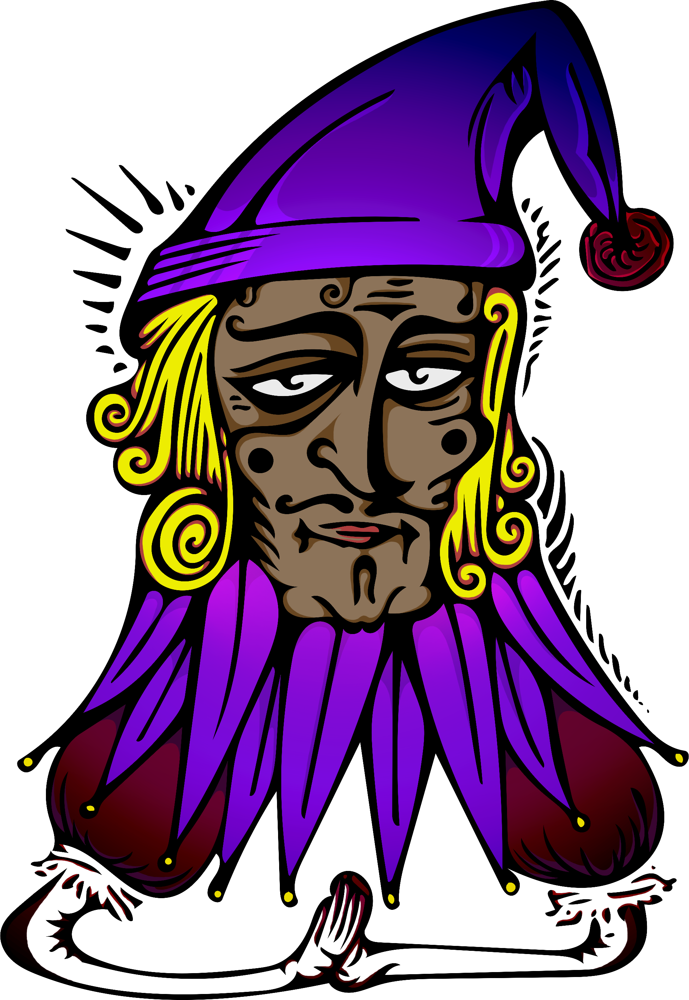
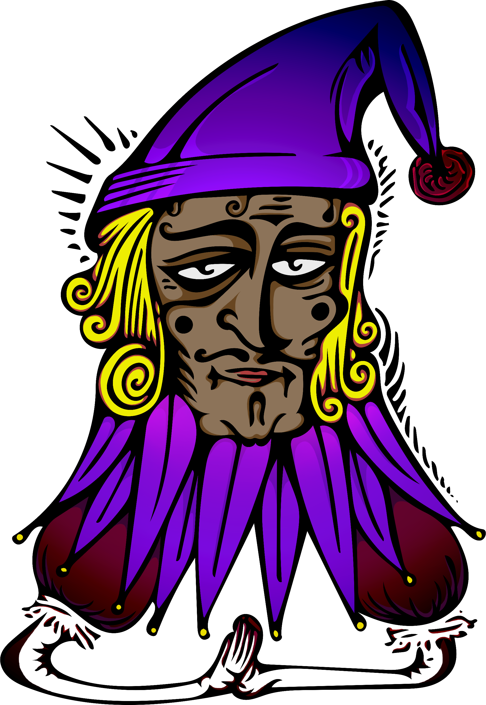

ABOUT:
Welcome to Rogue Jester Visual Arts, showcasing the artwork of Matthew Spach. Matthew received his B.A. in Film and Television at California State University Fullerton and has worn many hats in the realm of independent film production. At the moment, he lives a nomadic lifestyle in Thailand and California. His current artistic ventures are focused primarily on fine art photography and video editing. Please enjoy the site and send any comments or inquiries to the matthewspach@theroguejester.com.
 
